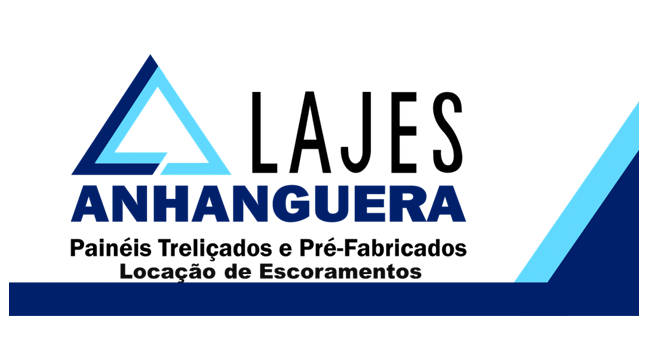
Fundada em 1992, a Lajes Anhanguera já atendeu as mais variadas empresas, sempre com
o compromisso de entregar o melhor produto com um atendimento especializado e de qualidade. Para
entregar um trabalho de qualidade, mesclamos dois itens fundamentais: tecnologia e os melhores
profissionais. Nosso corpo técnico é formado por engenheiros, que trabalham com a melhor tecnologia para
que todo o processo não tenha margem de erro.
PRÉ-LAJES
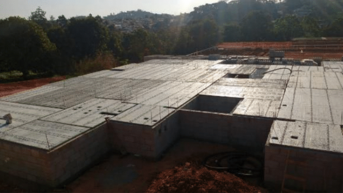
As Placas PA 325 Anhanguera, com largura máxima de 325 cm e espessura de
4 cm, cobrem a maioria dos vãos e podem ser utilizadas em todo tipo de obra, estrutura convencional,
pré-moldada, metálica e alvenaria estrutural. Elas reduzem o escoramento em mais de 50%, pois são
inseridas nas placas armadura bidirecional (positiva). Isto gera grande economia de prazo e mão de
obra aplicada no canteiro.
PAINEL TRELIÇADO 35CM
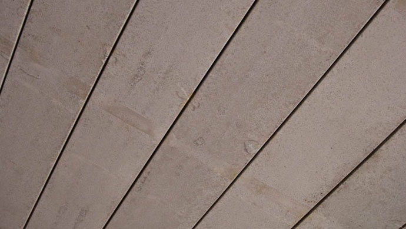
Os painéis treliçados Anhanguera, disponível no tamanho de 35 cm de
largura e 3 cm de espessura reúnem num só produto, características como baixo custo e alta
flexibilidade na montagem.
PRÉ-FABRICADOS
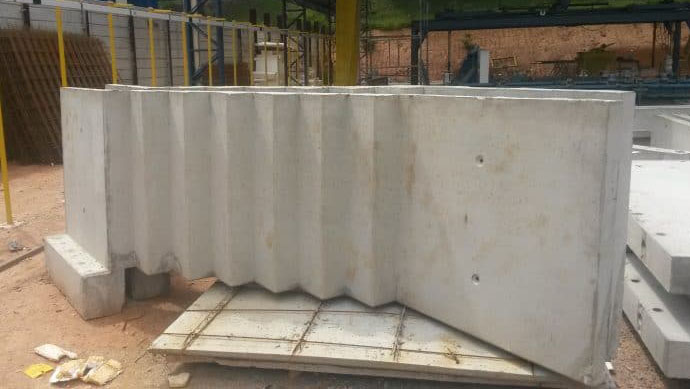
Alguns projetos exigem mais do que os painéis e placas padronizados. Por
isto, a Lajes Anhanguera desenvolve materiais em concreto pré-fabricado para obras que exigem
soluções especificas. Essas peças podem ter formatos e dimensões projetadas sob medida para as
necessidades da sua obra, tornando-se a solução ideal para otimizar o processo construtivo e gerar
economia na empreitada:
- Painéis autoportantes
- Escadas
- Vigas
- Varandas
- Outros
ESCORAMENTO DE LAJES
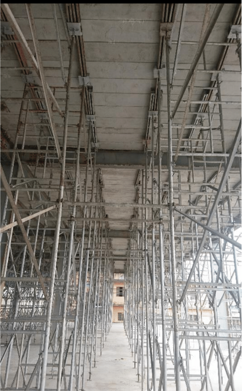
Com um escoramento leve, composto de torres, escoras, tripés e vigas,
podemos dar praticidade e agilidade que sua obra necessita.
MÃO FRANCESA/GUARDA CORPO
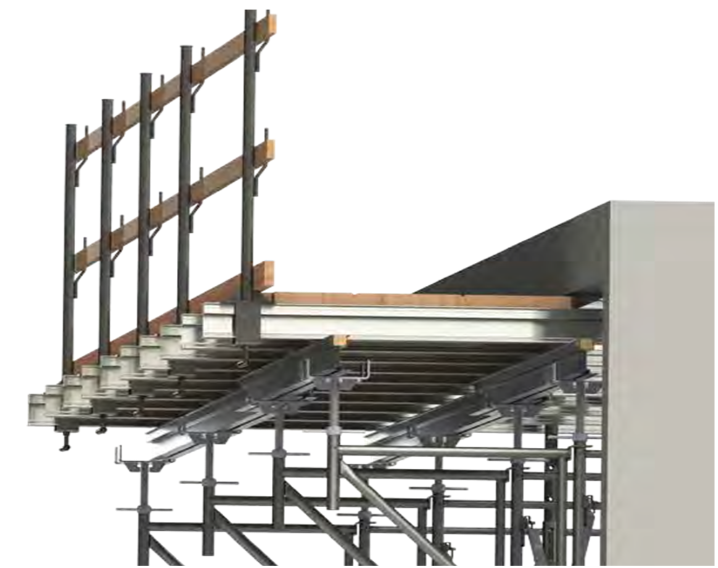
Desenvolvido de maneira a agilizar o trabalho de escoramento de lajes e
vigas, as escoras Anhanguera oferece segurança, substancial redução de custos e maior velocidade de
montagem.
TRAVAMENTO DE VIGAS E PILARES
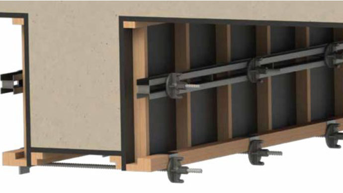
Temos uma linha de equipamentos direcionados ao travamento de Pilares e
Vigas, permitindo maior segurança e agilidade para sua obra.
GARFO METÁLICO
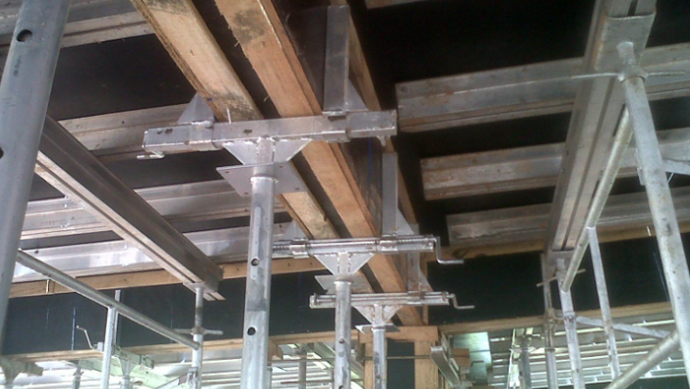
Vantagens sobre os garfos de madeira e sobre as cruzetas. Possibilita
montagem mais rápida e dispensa a utilização de travamento no fundo e lateral da viga. Vigas de até
700 mm, observando a altura do garfo, do fundo estruturado e da estruturação lateral da forma.
ALUGUEL DE ESCORAMENTO METÁLICO
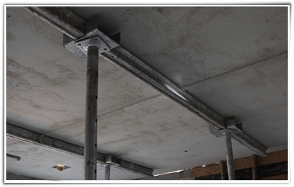
Fazemos o projeto de escoramento metálico já otimizado em função do uso
da pré-laje ou maciça e alugamos o escoramento para o cliente. Dessa forma centralizamos a
responsabilidade do projeto e o cronograma de escoras e lajes em um único fornecedor.
EQUIPE DE MONTAGEM E IÇAMENTO
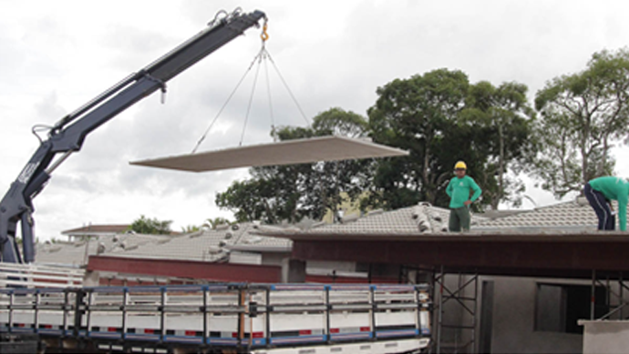
Trabalhamos com equipes que executam a montagem do escoramento, içamento
da pré-laje através de equipamentos específicos (gruas/guindastes) e efetuam a montagem da laje.
PRODUÇÃO EM CANTEIRO
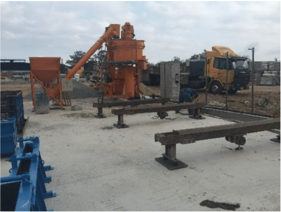
A LAJES ANHANGUERA pode produzir as lajes e pré-moldados em seu canteiro
de obra, sem abrir mão de qualidade e produtividade, para isso:
- Toda produção em ambiente coberto com montagem de galpão provisório;
- Usina de concreto;
- Ponte rolante para produção e caminhão munck para manipulação das peças;
- Cavaletes vibratórios para produção de pré-laje;
- Formas metálicas para produção de pré-laje, escadas e vigas pré-moldadas;